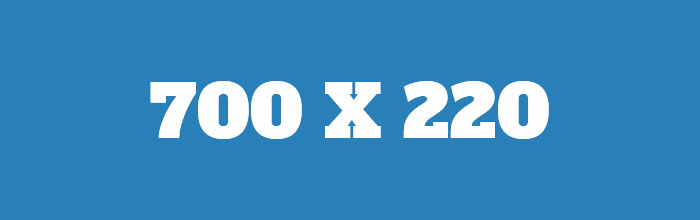

Tévedni emberi dolog - lebegni isteni

Levegő után kapkodok, miközben életem egy sor bánatos címke formájában vonul el előttem, mert néhány hónappal ezelőtt arra eszméltem, hogy fuldoklom a kéretlen reklámok cunamijában, amelyek reggelenként a sós-füstölt hering után beözönlenek a levélnyíláson. Bogárszívónk segítségével mentett meg wagneri takarítónőnk, Grendel, aki hallotta fojtott fejhangomat a miriád kiállítási meghívó, adománykunyeráló levél és az általam megütött főnyeremények alól....